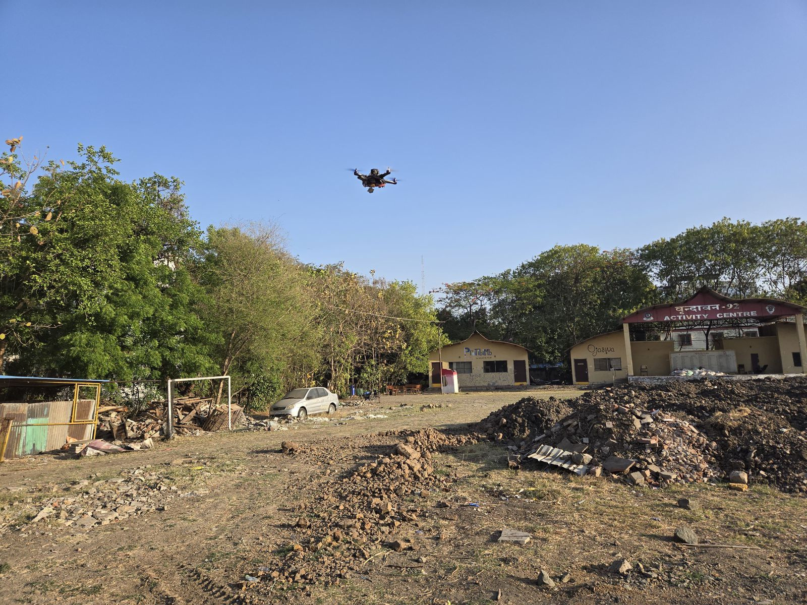
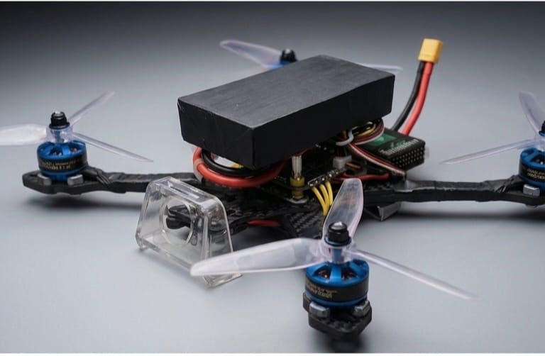
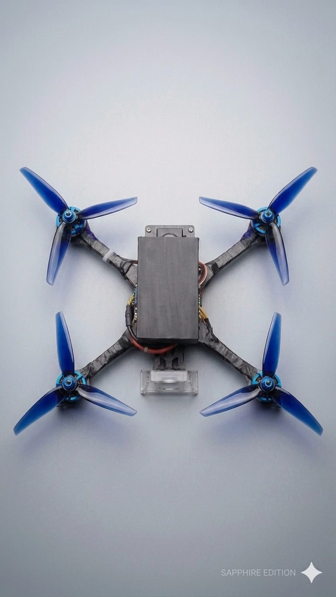
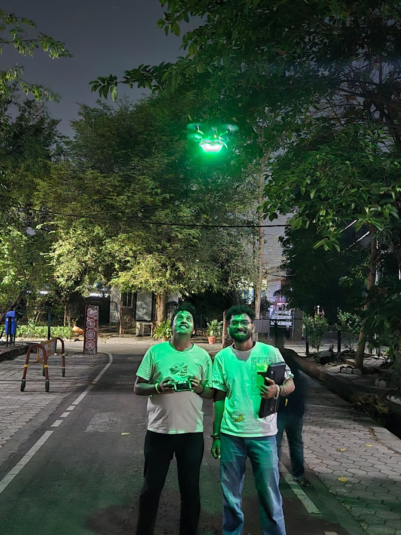
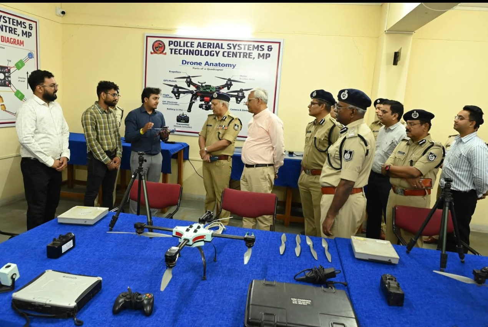
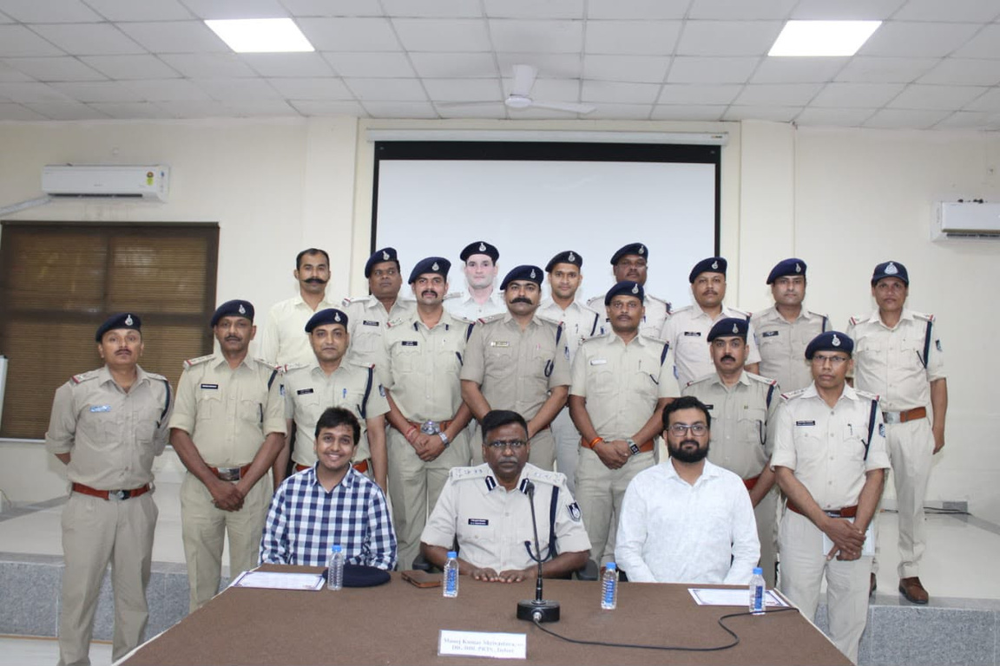
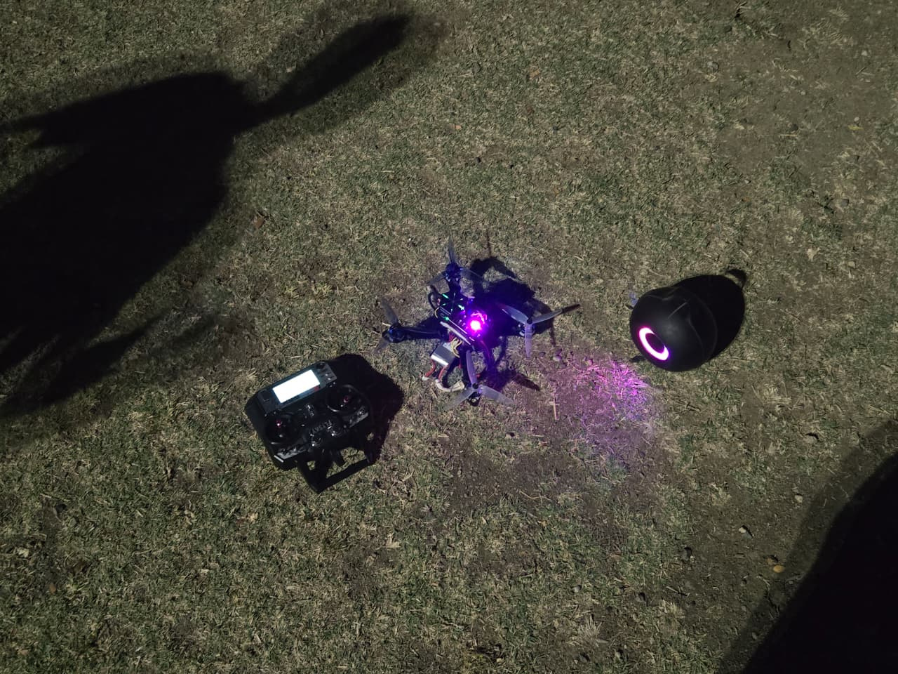

01
Sensor-based estimation
Explore how IMU, optical flow, range sensing, and other onboard measurements can contribute to motion estimation.
I'm exploring practical software and sensor-fusion approaches for autonomous UAV navigation in environments where GPS is unavailable or unreliable. This page is the public starting point for the project, its progress, and its planned open-source work.
Built by Vinayak Raj Sharma · Holdovers UAVs · India

Many autonomous UAV workflows depend on satellite positioning. I'm working toward a practical, documented software foundation for experimenting with navigation when that signal cannot be relied on. The project is early-stage; the goal is to share useful implementation details as they are developed and tested.
Explore how IMU, optical flow, range sensing, and other onboard measurements can contribute to motion estimation.
Document experiments and integration paths around companion-computer software and autopilot systems.
Publish understandable setup notes, test observations, and reusable software as the public repository takes shape.
My team has demonstrated a proof of concept for autonomous flight along a predefined path in a controlled GPS-denied setup. The next work is to improve repeatability, document the software and hardware interfaces, and validate performance in broader test conditions.
Follow development ↗The repository will grow alongside the engineering work. Results and limitations should be documented honestly, not presented as solved problems.
A few images from prototype development, outdoor testing, and technical demonstrations.






The machine-readable funding.json file describes the project and its proposed funding plan. It is intended for funding platforms and tools that support the Funding JSON format. Please review the repository, public code, and license status before submitting it to any fund.